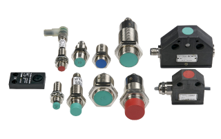
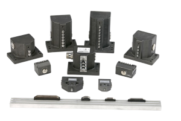
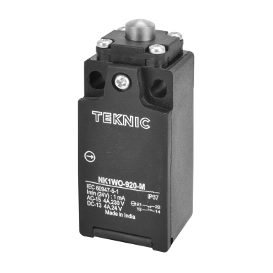
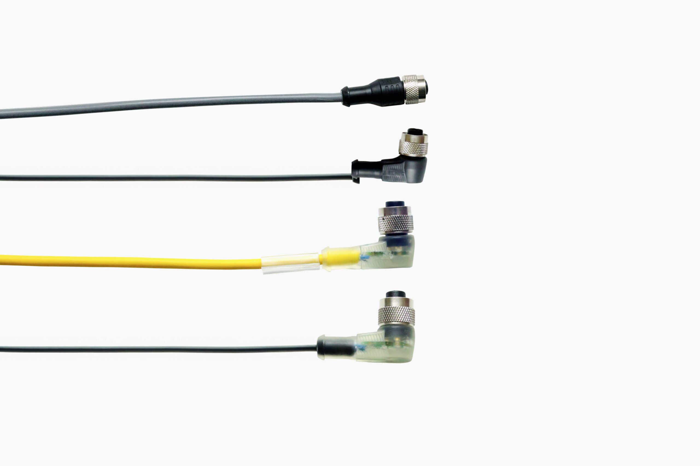

35+ Years
Of industrial manufacturing
experience
Engineered sensing, switching and control solutions for machines that demand reliability.
Since 1989, Teknic Euchner has been building its expertise around one simple principle: industrial components should perform reliably, every time they are called upon.
With the engineering know-how of Euchner Germany and decades of manufacturing experience in India, we develop control gear and sensing solutions for demanding industrial applications.
From machine positioning and object detection to switching and safety-related applications, our products are built to deliver consistent performance where it matters most.
Numbers and claims should be updated with the company's verified current figures before publishing.
Of industrial manufacturing
experience
Year Teknic Euchner
was established
Solutions across sensing,
switching and machine control
Product access and support
across India
Industrial machines depend on components that can sense movement, detect position, control processes and respond when it matters. Teknic Euchner offers a focused range of industrial products engineered for reliable operation across demanding applications.

Designed for control and positioning applications, our inductive proximity switches deliver precise object detection without physical contact.
EXPLORE PROXIMITY SWITCHES
Robust construction, corrosion-resistant materials and high protection ratings make our limit switches suitable for demanding industrial environments.
EXPLORE LIMIT SWITCHES
Developed with decades of machine-tool expertise, these solutions provide reliable control and positioning for industrial machinery and equipment.
EXPLORE PRECISION LIMIT SWITCHES
Our photoelectric sensors use light-based detection to support reliable object sensing and automation across a range of industrial applications.
EXPLORE PHOTOELECTRIC SENSORS
Designed to meet demanding industrial requirements, NK Limit Switches offer flexible actuation, robust construction and options suited to safety-related applications.
EXPLORE NK LIMIT SWITCHES
Our sensor and actuator cables are designed for demanding applications, including energy-chain environments, with options suited to different installation requirements.
EXPLORE CABLE CONNECTORSIndustrial environments leave little room for uncertainty. That's why our approach combines engineering expertise, robust materials and manufacturing experience to create products designed for dependable performance.
Built on decades of experience and strengthened by Euchner Germany's engineering heritage.
Products designed to deliver consistent operation in demanding industrial environments.
Quality materials, precision manufacturing and application-focused design for long-term performance.
Products developed around the practical requirements of machines, automation systems and industrial equipment.
Our commitment to quality extends from product development and manufacturing to customer service.
Our products support the machines and systems that keep modern manufacturing moving.
01
Precision sensing and positioning for machine-tool applications.
02
Reliable detection and switching for automated processes.
03
Components designed for demanding production environments.
04
Sensing and switching solutions for movement, positioning and control.
05
Products designed to support machine safety and reliable control.
06
Solutions selected around the specific requirements of your equipment.
Teknic Euchner brings together the engineering heritage of Euchner Germany with manufacturing and market expertise in India.
Established in 1989, the company has grown with the changing needs of Indian industry while remaining focused on quality, precision and dependable control solutions.


For industrial components, quality is about more than meeting a specification.
It's about consistent performance.
It's about dependable operation.
It's about building components that customers can specify with confidence.
At Teknic Euchner, quality is built into our approach to product development,
manufacturing and customer service.
Find an authorised dealer near you and get connected with the right proWhether you're designing a
new machine, upgrading an existing system or looking for a reliable replacement, our team can help
you identify the right control gear for your requirements.dut for your application.
Find an authorised dealer near you and get connected
with the right product for your application.